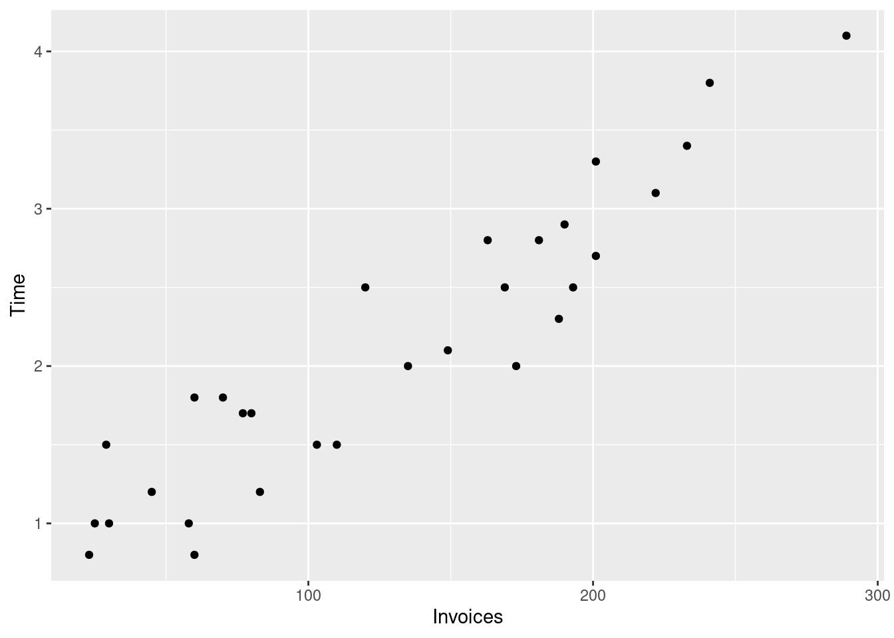
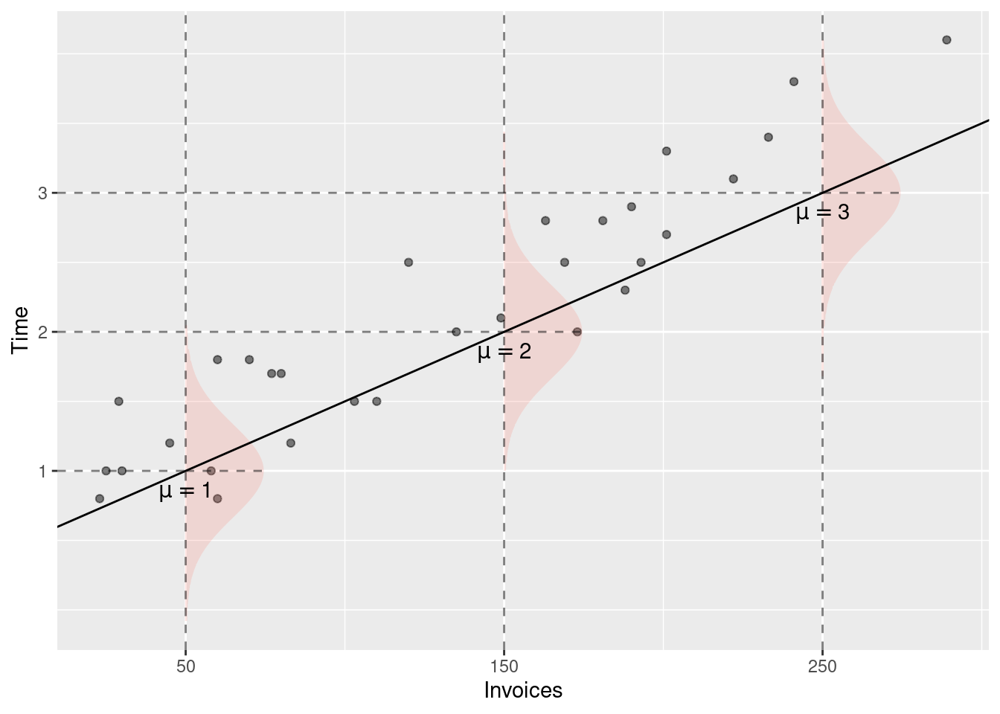
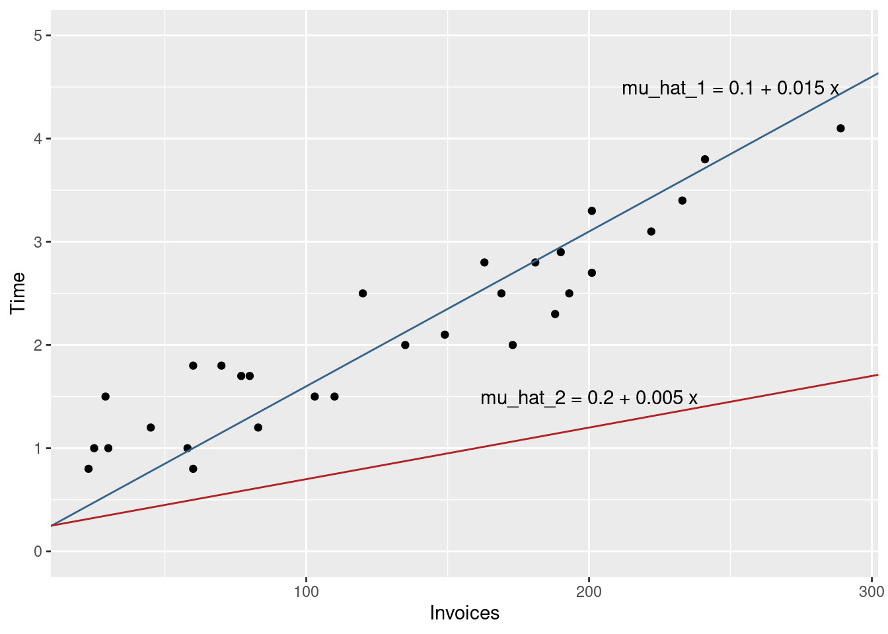
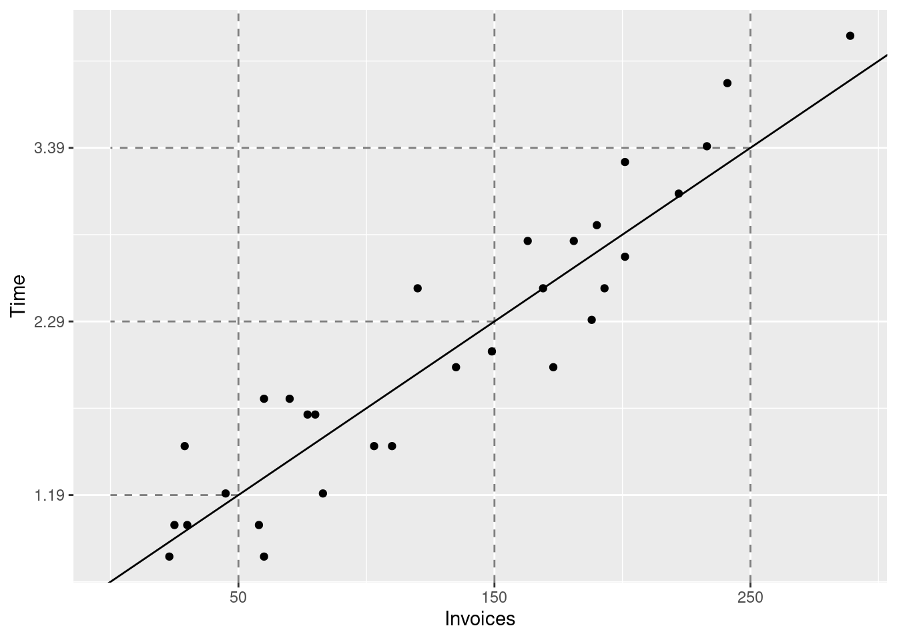

We begin the introduction to linear regression analysis using a simple example with one response variable and one explanatory (predictor) variable. Let us first load the data and the tidyverse packages.
The dataset invoices contains 30 rows and 3 columns. The data was provided by an accounting firm which processes invoices on behalf of its clients. Each observation corresponds to one working day of this firm. The number of invoices processed each day is given in the column Invoices and the processing time for that number of invoices is given in the column Time. Both columns are numeric.
Time: (numeric) Processing time in hours
Invoices (numeric): Number of invoices
You can see the first few values of each column by calling glimpse. You can also find the kids object in the global environment (right part of R studio) and click on it to view the whole table.
Our goal in this exercise is to develop a simple model that can predict the processing time given a number of invoices, for example 50, 120, 201, 250 or 400 invoices.
First we will visualize the data using a scatterplot Figure 4.1. In that plot each dot represents one row in the data. Here each row is one working day of the firm, therefore each
invoices_plt <-ggplot(# The data argument tells the plotting function# where to find the datadata = invoices, # The aes (aesthetics function) maps columns in the dataset to visual elements# of the plot, in this case the x and y axes.aes(x = Invoices, y = Time) ) +# geom_point draws the actual dots on the plotgeom_point()# Print the plotprint(invoices_plt)

Figure 4.1: Processing time and number of invoices
We will start by assuming a linear relationship between the processing time and the the number of invoices.
\begin{align*}
& i = 1,\ldots,n = 30\\
& x_i: \text{ number of invoices on day } i \\
& y_i: \text{ processing time on day } i \\
\end{align*}
y_i = \beta_0 + \beta_1 x_i
\tag{4.1}
Where the coefficients \beta_0 and \beta_1 are fixed but unknown. When you look at the scatterplot in Figure 4.1 you will notice that Equation 4.1 cannot possibly describe the data as it implies that all points must lie on a single straight line. Therefore we need to relax this equation by adding a term for the deviation of each dot from that straight line. Let us call this term e_i.
The extra term e_i accounts for the deviations of the observed processing times from the line.
We will assume that e_i follows a normal distribution with expected value (mean) of zero and variance \sigma^2. We will also assume that e_i are independent and that e_i are independent of x_i.
e_i \sim N(0, \sigma^2)
Under the assumption that E(e_i) = 0 we can compute the conditional (given the number of invoices) expected value of y_i. We use the linearity of the expected value:
The last formula says that y follows a normal distribution with a center (mean/expected value) that varies with x_i according to the linear equation. The standard deviation of these distributions is one and the same and does not vary with x. The latter property is called homoscedasticity (this derives from Ancient Greek, where the word skedastikos has to do with “scatter” or “disperse”).
For the sake of the example, let’s assume that \beta_0 = 0.5, \beta_1 = 0.01.
For x \in \{50, 150, 250\} the expected values of y are:
E(y | x = 50) = 0.5 + 0.01 \cdot 50 = 1 [hours]\\
E(y | x = 150) = 0.5 + 0.01 \cdot 150 = 2 [hours] \\
E(y | x = 150) = 0.5 + 0.01 \cdot 250 = 3 [hours]\\
Note that the expected value of y has the same unit of measurement as y. If y is measured in hours, then E(y | x) is also measured in hours.
Figure 4.2 visualizes the conditional distributions of y given x. For each value of x, the line \beta_0 + \beta_1 x determines the expected value of y.

Figure 4.2: Conditional distributions of y given x for three values of x: 50, 150, and 250 invoices.
4.1 Interpretation of the linear equation
The first thing that you should consider are the units of measurement of the various variables in your model. y, the processing time is measured in hours (you seed that in the data description), x is the number of invoices. Both sides of any equation need to have the same unit of measurement, otherwise the equation would not make any sense. Therefore the constant in the equation is measured in the same units as y (hours) and the coefficient of x must be in hours per invoice.
If you have trouble understanding the unit of measurement of \beta_1, think about how you would calculate your rent for three months. Let’s say that you apartment rent is given in EUR per month and that you pay 500 EUR per month. Your total rent for three months would amount to:
(XXX, fix) In general, how you would interpret the interpretation of the model coefficients vary depending on the context of the model (the data). In this example you can think about the processing time as the costs of the firm for processing a given number of invoices.
The the \beta_1 coefficient would correspond to the marginal cost as it describes how much the expected processing time would change for one additional invoice. The constant (\beta_0) is the expected processing time for x = 0 invoices, thus it corresponds to (expected) fixed costs of the firm (production costs that do not depend on the actual number of invoices).
4.2 Ordinary Least Squares
Up to now we have considered a model with known coefficients \beta_0 and \beta_1. In general, these coefficients are not known and we need to make reasonable guesses about them using the observed data. Lets compare two guesses about the coefficients. We will write a “hat” over the expected value of y to make clear that this is an estimated value and not the true (and unknown) \mu_i.
invoices %>%ggplot(aes(x = Invoices, y = Time) ) +geom_point() +## Draws the blue linegeom_abline(intercept =0.1, slope =0.015, color ="steelblue4") +## Draws the red linegeom_abline(intercept =0.2, slope =0.005, color ="firebrick") +## Sets the range of the y-axis. We use this here in order to## clearly see both linesylim(c(0, 5)) +## (Optional) write the equations as annotation in the plotgeom_text(data =tribble(~x, ~y, ~label,250, 4.5, "mu_hat_1 = 0.1 + 0.015 x",200, 1.5, "mu_hat_2 = 0.2 + 0.005 x" ),aes(x = x, y = y, label = label) )

Figure 4.3: The lines corresponding to the two guesses about the model coefficients.
Clearly, the red line would provide poor predictions, because it would underestimate the processing time for each of the observed days (because all dots line above the line).
The blue line appears to fit the data much better, as it lies close to the points and does not systematically under or overestimate the observed processing time.
Let us formalize the idea about closeness to the data. A model that produces “good” predictions should have “small” prediction errors for the observed values. Let the predictionerror be the difference between the observed processing time and the predicted processing time. We call this difference the residual for observation i.
r_i = y_i - \hat{\mu}_i
Let us calculate the residuals for the two models: red and blue. We will do this by adding four new columns to the invoices data set.
invoices <- invoices %>%mutate(## Calculate the predictions using the model equation (blue)mu_hat_1 =0.1+0.015* Invoices,## The residuals are the differences between observed value (Time) and predicted valueresiduals_1 = Time - mu_hat_1,## We do the same for the second model (red)mu_hat_2 =0.2+0.005* Invoices,residuals_2 = Time - mu_hat_2 )
## Select the first few observations (head)head(invoices) %>%## (Optional) used to produce the html table that you see below knitr::kable()
Table 4.1: Predicted values and residuals for the two guesses. For the sake of brevity the table only shows the first few observations.
Day
Invoices
Time
mu_hat_1
residuals_1
mu_hat_2
residuals_2
1
149
2.1
2.335
-0.235
0.945
1.155
2
60
1.8
1.000
0.800
0.500
1.300
3
188
2.3
2.920
-0.620
1.140
1.160
4
23
0.8
0.445
0.355
0.315
0.485
5
201
2.7
3.115
-0.415
1.205
1.495
6
58
1.0
0.970
0.030
0.490
0.510
You can see the full table with all predicted values and residuals by running the code above and clicking on the invoices object in the global environment in R Studio. In the scatterplot the residuals correspond to the vertical distance between the dots (observed processing time) and the two lines (predicted processing times). Figures 4.4 and 4.5 visualise these residuals.
Now let us imagine that we pay the accounting firm a compensation each time that our prediction (for the observed days) is off-target (i.e. has a non-zero residuals). The accounting firm considers both underestimation and overestimation of the observed processing a bad thing and they know that any reasonable model such as the blue line would yield negative residuals for some of the observations and positive residuals for the rest of the observations.
If the fine is proportional to the sum of the residuals, the even terrible models can have a low residual sum (and we will get away with a low fine), because positive and negative residuals will cancel in the sum. If you are not convinced, consider the following (much simpler) model
\hat{\mu}_i^{(3)} = 2.11
This model predicts the processing time with the average processing time (which is about 2.11 hours) and does not consider the number of invoices. The residuals for the first few days are shown in Table 4.2 and Figure 4.6 plots all the residuals.
invoices <- invoices %>%mutate(mu_hat_3 =2.11,residuals_3 = Time - mu_hat_3 )head(invoices) %>%select(Day, Time, Invoices, mu_hat_3, residuals_3) %>% knitr::kable()
Table 4.3: Sums of squared residuals for the three models.
rss_1
rss_2
rss_3
5.384075
57.08767
23.747
The RSS of the third model is now larger than the RSS of the first model which makes intuitive sense, because we agreed that the blue line is much more closer to the points in the scatterplots than the other two lines. From Table 4.3 it should become clear that the RSS depends on our choice of coefficients.
Because we would like to avoid paying too much for wrong predictions, let us find the coefficients that make our penalty as small as possible. Let use use \hat{\beta}_0 and \hat{\beta}_1 to denote our guesses about \beta_0 and \beta_1. Our predictions for the observed values are then
\hat{\mu}_i = \hat{\beta}_0 + \hat{\beta}_1 x_i, \quad i = 1,\ldots,n
The RSS therefore depends on these guesses. To emphasize this point we will write RRS(\hat{\beta}_0, \hat{\beta}_1).
The values of \hat{\beta}_0 and \hat{\beta}_1 that make the RSS as small as possible are called the Ordinary Least Squares (OLS) estimates for \beta_0 and \beta_1.
Because we will deal almost exclusively with OLS estimates we will not write the OLS label every time. You can see how the minimization problem is solved in Section 4.6.2.
4.3 Finding the OLS solution
To find the OLS solution we can use a R function called lm. This function takes a formula as its first argument that describes the model.
Our model for the processing time is
\text{Time}_i = \beta_0 + \beta_1 \text{Invoices}_i + e_i, e_i \sim N(0, \sigma^2)
On the left hand side of the formula you write the name of the variable in the data that you want to model (Time in our case). On the right hand side of the formula you write the names of the predictor variables in the model. Your model has only one predictor variables: Invoices. Finally, the data argument instructs lm where to look for this variables. In our case they reside in the object invoices.
fit <-lm(Time ~1+ Invoices, data = invoices)
Printing the output from lm shows you the OLS solution for \hat{beta}_0 and \hat{\beta}_1. Now you can write the estimated regression equation
\hat{\mu} = \hat{\beta}_0 + \hat{\beta}_1 x \\
\hat{\mu} = 0.64 + 0.011 x \\
\tag{4.2}
In Table 4.4 you can see that the OLS estimates resulted in the lowest RSS among the three models that we compared.
4.4 Predictions
Once you have a estimates for the unknown coefficients in the model you can use these to make predictions about y. The predicted value of y is simply the estimated expected value of y. Using Equation 4.2 we can compute the predictions for x = 50, x = 150, and x = 250 (our original goal).
## Where to get the data?invoices %>%ggplot(## How to map data to elements in the graphicaes(x = Invoices,y = Time ) ) +## How to visualise the datageom_point() +## Add the regression line (least squares) to the graphicgeom_abline(intercept =0.64, slope =0.011) +geom_vline(## Where should the vertical lines intercept with the x-axisxintercept =c(50, 150, 250),## Alpha channel: controls transparencyalpha =0.5,## lty: line typelty =2 ) +## Controls the x-axisscale_x_continuous(breaks =c(50, 150, 250)) +geom_segment(data =tibble(x =c(50, 150, 250),y =c(1.19, 2.29, 3.39),xend =0 ),aes(x = x, y = y, xend = xend, yend = y),alpha =0.5,lty =2 ) +scale_y_continuous(breaks =c(1.19,2.29,3.39 ))

Instead of doing the calculations manually, you can use the predict function. It takes a model object (in our case the result from running lm) and a data object (e.g. a tibble). The data object must have the same variables (columns) as the ones specified in the formula, otherwise predict would fail.
The results from predict differ slightly from our own calculations above due to rounding errors in our calculations.
4.5 Interpretation of the estimated coefficients
\hat{\mu} = 0.64 + 0.011 x
As previously discussed the estimated fixed costs are 0.64 hours. The estimated cost of processing one additional invoice is 0.011 hours.
4.6 Mathematical Details (optional)
4.6.1 The conditional expectation as prediction
Until now we have used the expected value of y given x as a prediction for y without a justification. Assume that we offer the accounting firm a prediction quality guarantee. Each time that our prediction (\hat{y}) fails to hit the real y we pay a penalty that is equal to
(y - \hat{y})^2
If our model is adequate, then future values of for let’s say x = 50 invoices will be generated from a normal distribution with mean 1 and standard deviation 0.3. Now the question is, how should we make our prediction so that the penalties that we expect to pay are as small as possible.
Our expected loss would be:
\text{Expected Loss}(\hat{y}) = E\left((y - \hat{y})^2 | x = 50\right)
\begin{align}
\text{Expected Loss} & = E\left((y - \hat{y})^2 | x = 50\right)\\
& = E\left(y^2 - 2 y \hat{y} + \hat{y}^2 | x = 50\right) \\
& = E(y^2 | x = 50) - 2\hat{y}E(y | x = 50) + \hat{y}^2 \\
\end{align}
Now let’s find the minimal expected loss by setting the first derivative of the loss function equal to zero:
\frac{\partial \text{Expected Loss}(\hat{y})}{\partial \hat{y}} = -2 E(y | x = 50) + 2\hat{y} = 0
Solving this equation is very easy.
\hat{y} = E(y | x = 50)
You should also check the sufficient condition for a local minium (positive second derivative!). If the second derivative is negative, then you have found a local maximum, not a minimum.
\frac{\partial^2 \text{Expected Loss}(\hat{y})}{\partial^2 \hat{y}} = 2 > 0
The second derivative is positive, so our solution (predicting the random variable with its expected value) yields the best prediction in the sense of minimizing the quadratic loss function.
To strenghten your understanding, take a couple of minutes to play the following game. You would like to predict the value of random variable generated from N(1, 0.3^2). You want to compare two predictions: the first using the expected value of the distribution (\hat{y} = 1), the second one using another value: \hat{y}^{(1)} = 2.
sim_loss <-tibble(## Generate value from N(1, 0.3^2)y =rnorm(10, mean =1, sd =0.3),## Compute the error of each prediction (you are always predicting with the expected value, i.e. 1)error = y -1,## Compute the loss for each predictionloss = error^2,## Now compute the error and the loss when using the second predictionerror1 = y -2,loss1 = error1 ^2)sim_loss
Notice that the prediction using \hat{y} = 2 yields a much worse total loss than the prediction using the conditional expected value \hat{y} = 1. Change the value of the second prediction (some other value instead of 2) and re-play the game a couple of times.
4.6.2 Derivation of the OLS estimator
As we have already discussed, the OLS estimator looks for guesses \hat{\beta}_0 and \hat{\beta}_1 that minimize the residual sum of squares (RSS).
To find the minimum we compute the first derivatives of \text{RSS}(\hat{\beta}_0, \hat{\beta}_1) with respect to its two arguments and set these derivatives to zero.
\begin{align}
\frac{1}{n}\sum_{i = 1}^{n} y_i - \frac{n}{n} \hat{\beta}_0 - \hat{\beta}_1 \frac{1}{n} \sum_{i = 1}^{n} x_i = 0 \\
\bar{y} - \hat{\beta}_0 - \hat{\beta}_1 \bar{x} = 0 \implies \\
\end{align}
To simplify the notation we use the following shorthands:
\begin{align}
\bar{x} = \frac{1}{n}\sum_{i = 1}^{n} x_i \quad \text{ the arithmetic average of } x \\
\bar{y} = \frac{1}{n}\sum_{i = 1}^{n} y_i \quad \text{ the arithmetic average of } y \\
\overline{y^2} = \frac{1}{n}\sum_{i = 1}^{n} y_i^2 \quad \text{ the arithmetic average of } y^2 \\
\overline{x^2} = \frac{1}{n}\sum_{i = 1}^{n} x_i^2 \quad \text{ the arithmetic average of } x^2 \\
\overline{xy} = \frac{1}{n}\sum_{i = 1}^{n} x_i y_i \quad \text{ the arithmetic average of } x\cdot y \\
\end{align}
Finally we bring all term except \bar{y} to the right hand side of the equation to obtain:
\bar{y} = \hat{\beta}_0 + \hat{\beta}_1 \bar{x}
This equation informs us that the OLS regression line passes through the center of the observations: (\bar{x}, \bar{y}).
An easy way to solve the system of equations is to multiply the first equation by \bar{x} and subtract the first equation from the second one. This will eliminate \hat{\beta}_0 and allow us to solve for \hat{\beta}_1.
The equation for the intercept in Equation 4.3 simply says that the OLS regression line passes through the center of the observations. The second equation says that the slope estimate equals the covariance of x and y scaled with the variance of x.
The (empirical) covariance between two variables is defined as the average cross-product of the deviations of x and y from their respective means (\bar{x}) and \bar{y}.
Now it is easy to compute the conditional (given x_i) expectation.
\begin{align*}
E(\hat{\beta}_1 | x_i) & = E\left(\sum_{i = 1}^{n} c_i y_i | x_i\right) \\
& = \sum_{i = 1}^{n} E(c_i y_i | x_i) \\
& = \sum_{i = 1}^{n} c_i E(y_i | x_i)
\end{align*}
From the model definition we know that the conditional expectation E(y_i | x_i) = \beta_0 + \beta_1 x_i.
\begin{align*}
E(\hat{\beta}_1 | x_i) & = \sum_{i = 1}^{n} c_i (\beta_0 + \beta_1 x_i) \\
& = \beta_0 \sum_{i = 1}^{n} c_i + \beta_1 \sum_{i = 1}^{n} c_i x_i
\end{align*}
Now notice that the sum of c_i is zero:
\begin{align*}
\sum_{i = 1}^{n} c_i & = \sum_{i = 1}^{n} \left( \frac{x_i - \bar{x}}{n(\overline{x^2} - \bar{x}^2)} \right) \\
& = \frac{1}{n(\overline{x^2} - \bar{x}^2)}\sum_{i = 1}^{n} (x_i - \bar{x}) \\
& = 0
\end{align*}
The last result is due to the fact that the deviation of x from its average \bar{x} sum to zero!
## Create some datadt <-tibble(x =1:10,y =rnorm(10, mean =2+0.5* x, sd =0.5))## Fit a model including a constant (this is the 1 in the formula)fit_with_constant <-lm(y ~1+ x, data = dt)sum(residuals(fit_with_constant))
[1] 2.498002e-16
Suppressing the constant in the model results in a non-zero sum of the residuals.
## The 0 in the formula removes the constantfit_without_constant <-lm(y ~0+ x, data = dt)sum(residuals(fit_without_constant))
[1] 3.783743
Theorem 4.6 (Orthogonality of residuals and predictors) The product of the residuals and the predictor variables x sums to zero.